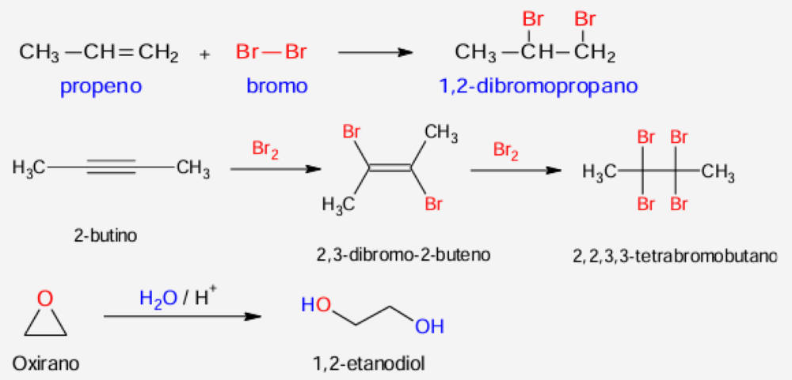
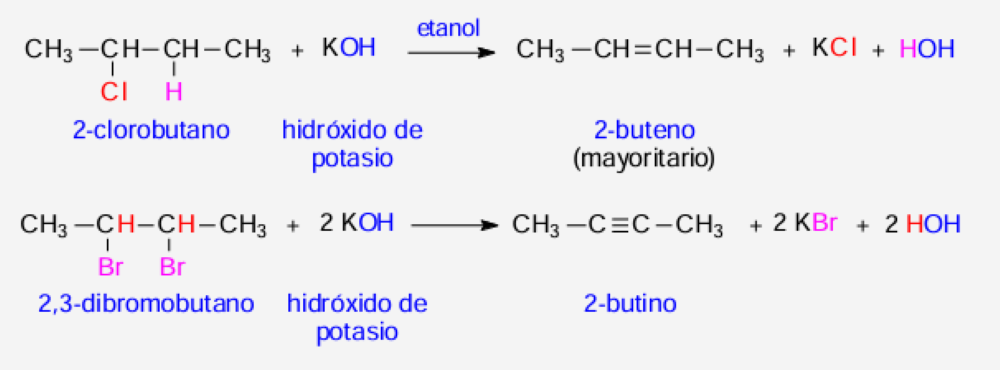
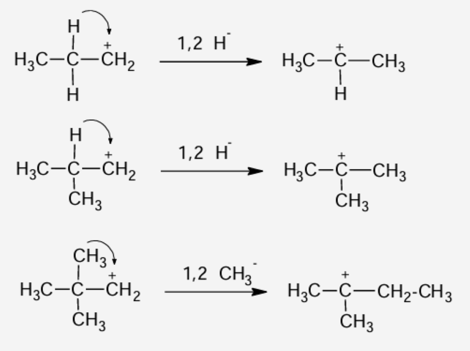
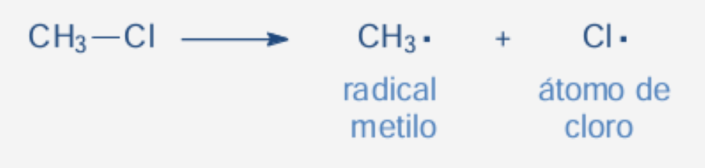
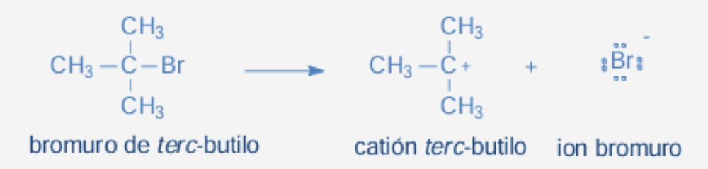
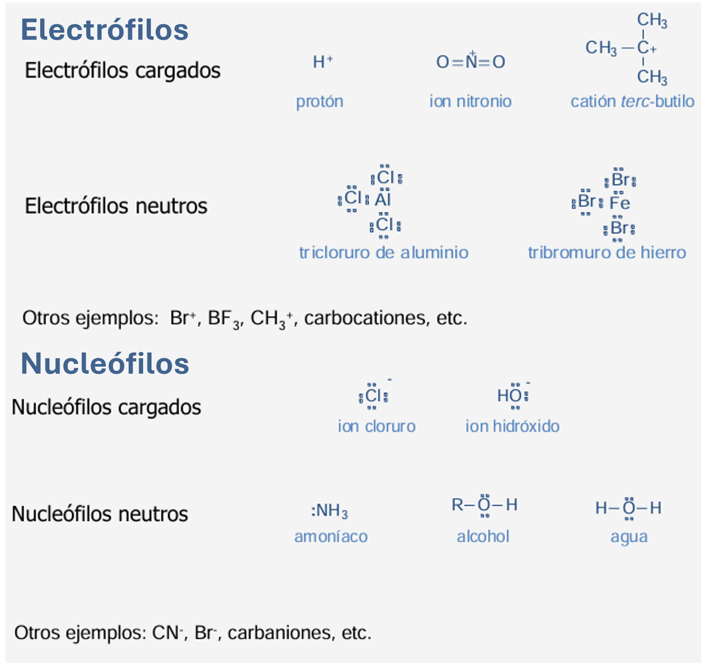
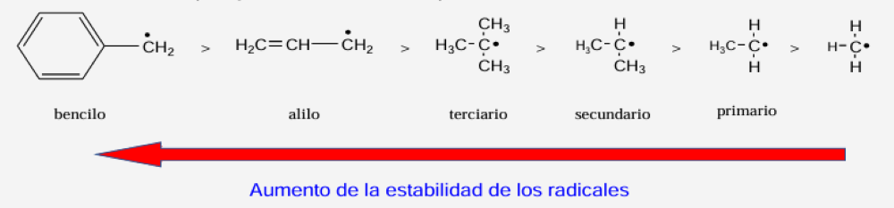
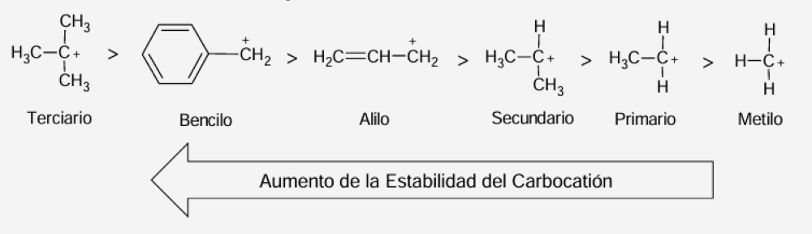

Universidad Peruana Cayetano Heredia
Facultad de Medicina • Química Orgánica
Capítulo 6: Reacciones en Química Orgánica
Facultad de Medicina • Química Orgánica
Capítulo 6: Reacciones en Química Orgánica

Propeno + Br₂ → 1,2‑dibromopropano; el 2‑butino adiciona dos veces Br₂ (doble → tribromoalqueno → tetrabromoalcano); el oxirano (ciclo tensado) adiciona agua dando 1,2‑etanodiol.
Es una adición electrófila: el doble enlace se abre e incorpora H y Br. El Br queda en el carbono central porque pasa por el carbocatione secundario más estable (Markovnikov).

2,3‑dibromobutano + 2 KOH → 2‑butino + 2 KBr + 2 H₂O; y 2‑clorobutano + KOH → 2‑buteno (mayoritario), el alqueno más sustituido.
Porque se favorece el alqueno más sustituido y estable (regla de Zaitsev): el 2‑buteno tiene más grupos alquilo sobre el doble enlace que el 1‑buteno.
El propeno tiene doble enlace que puede abrirse para incorporar los dos Cl (adición). El propano, saturado, solo puede cambiar un H por Cl (sustitución radicalaria con luz).

En carbocationes, un H o un grupo alquilo migra con su par de electrones (1,2) desde el carbono vecino al C⁺: la carga pasa al carbono vecino, más estable si queda más sustituido.
Porque (CH₃)₂CH–CH₂⁺ es primario: con una migración 1,2‑H se convierte en el terciario (CH₃)₂C⁺–CH₃, mucho más estable. El 2‑butilo ya es secundario y no gana estabilidad suficiente.

CH₃–Cl → CH₃• + Cl•: cada fragmento conserva un electrón del enlace (radical metilo y átomo de cloro).

(CH₃)₃C–Br → (CH₃)₃C⁺ + Br⁻: el bromo, más electronegativo, se queda con el par de enlace.
| Ruptura heterolítica más probable | Catión | Anión |
|---|---|---|
| a) Bromoetano: CH₃–CH₂–Br | CH₃–CH₂⁺ | Br⁻ |
| b) 2‑propanol: (CH₃)₂CH–OH | (CH₃)₂CH⁺ | OH⁻ |
| c) 2‑cloro‑2‑metilpropano: (CH₃)₃C–Cl | (CH₃)₃C⁺ | Cl⁻ |
Cl₂ con luz: homólisis → 2 Cl• (enlace apolar + energía). (CH₃)₃C–Br en agua: heterólisis → (CH₃)₃C⁺ + Br⁻ (enlace polarizado + solvente polar).

El electrófilo (E⁺, pobre en electrones) acepta el par; el nucleófilo (Nu⁻ o :Nu, rico en electrones) lo dona.
Nucleófilos: CH₃–NH₂, CH₃CH₂–OH, CH₃–CN, Br⁻, CH₃–CH₂–O⁻, CH₃–COO⁻ (aniones o con pares libres). Electrófilos: I⁺, BF₃, Ca²⁺ (cationes o con octeto incompleto).

Aumento de estabilidad: bencilo > alilo > 3° > 2° > 1°. Energías de disociación del enlace C–H: metilo 105, primario 98, secundario 95, terciario 92 kcal/mol.

Bencilo > alilo > terciario > secundario > primario > metilo: resonancia (bencilo/alilo) y efecto inductivo de los alquilos.
Porque los tres grupos CH₃ donan densidad electrónica por efecto inductivo (y hiperconjugación) al carbono sp² positivo, disminuyendo su déficit electrónico; el CH₃⁺ no tiene ningún grupo que lo estabilice.
Haz clic en cada nodo para desplegar u ocultar sus ramas.
Haz clic en la tarjeta para voltearla y ver la respuesta. Luego califícate con honestidad.
Porque donan un H/electrón al radical y generan un radical propio mucho más estable (deslocalizado por resonancia), que no propaga el daño: se aplica el orden de estabilidad de radicales del capítulo.
Una ruptura homolítica (la energía de la radiación rompe el enlace dando 1 e⁻ a cada fragmento). Los radicales formados atacan ADN y proteínas; por eso los radioprotectores son “cazadores de radicales”.
Que los radicales libres no solo dañan: el organismo los usa como arma microbicida. Es la misma química de homólisis y especies con electrón desapareado, ahora con fines defensivos.
Una sustitución: el fármaco genera un centro electrófilo y las bases del ADN (p. ej. N de guanina, nucleófilos) lo atacan, alquilando y entrecruzando las cadenas → muerte celular.
El carbono del grupo acilo (pobre en e⁻) es el electrófilo; el –OH de la serina enzimática, con par libre, es el nucleófilo. Se forma un éster: inhibición covalente (electrófilo‑nucleófilo).
El NAPQI es un electrófilo fuerte; el glutatión (y la N‑acetilcisteína, con –SH) actúa como nucleófilo que lo neutraliza por adición/sustitución. Sin nucleófilo suficiente, el electrófilo ataca proteínas hepáticas.
La transposición: migraciones 1,2 de metilo y de hidruro convierten cada catión en otro más estable hasta cerrar los anillos esteroideos: carbocationes y reordenamientos en acción.
Porque al ionizarse generan carbocationes alílicos estabilizados por resonancia (bencilo > alilo > …), lo bastante estables para existir en el sitio activo y lo bastante reactivos para las condensaciones.
Porque el agua es un solvente polar que estabiliza iones y favorece la heterólisis (menos costosa). La homólisis queda restringida a enzimas especializadas (ribonucleótido reductasa, B12) que controlan el radical en su sitio activo.
Adición incorpora átomos (↓ insaturación); eliminación expulsa vecinos (↑ π); sustitución cambia un grupo; transposición reordena el esqueleto.
Cada átomo se lleva un electrón → radicales; necesita luz/calor y ocurre en enlaces apolares.
El más electronegativo se queda con el par completo → iones; la favorecen los solventes polares y cuesta menos energía.
El electrófilo (catión u octeto incompleto) acepta electrones; el nucleófilo (anión o par libre) los cede.
Electrófilos típicos: H⁺, NO₂⁺, R₃C⁺, Ca²⁺ o neutros con octeto incompleto: BF₃, AlCl₃, FeBr₃.
Nucleófilos: OH⁻, Cl⁻, Br⁻, CN⁻, R–O⁻ y neutros con par libre: NH₃, H₂O, ROH, R–NH₂.
Estabilidad de radicales y carbocationes: Bencilo > Alilo > 3° > 2° > 1° > Metilo. “A más vecinos, más estable”.
Energías C–H: 3° (92) < 2° (95) < 1° (98) < CH₄ (105) kcal/mol: menor energía = radical más estable y enlace más fácil de romper.
En la transposición, un H o CH₃ salta con su par desde el carbono vecino al C⁺: el + queda donde haya más sustituyentes (más estable).
Nucleofilicidad = concepto cinético (velocidad de ataque al C); basicidad = termodinámico (equilibrio con H⁺).
En la adición de HX al alqueno, el H va al carbono con más hidrógenos: pasa por el carbocatione más estable (2‑bromopropano desde propeno).
Haz clic en cada término para ver su definición:
Error: creer que ambas “agregan” átomos.
Error: asignar cargas a una ruptura por luz/calor en enlaces apolares.
Error: invertir el costo energético.
Error: decir que el electrófilo “cede” electrones.
Error: descartar NH₃, H₂O o alcoholes.
Error: exigir carga positiva.
Error: asignar geometría incorrecta.
Error: colocar al metilo o al primario como más estables.
Error: dar el producto sin revisar si hay catión más estable posible.
Error: tratarlas como el mismo concepto.
Cada ciclo muestra 10 preguntas al azar de una base de 30. Cada vez que entras a esta pestaña o terminas un ciclo se sortean preguntas nuevas.